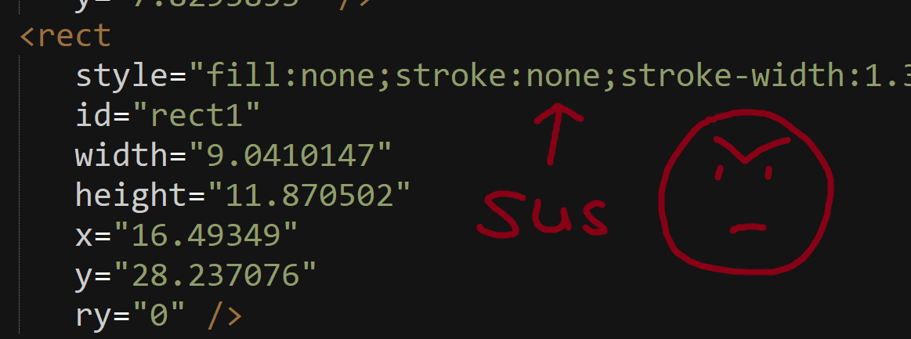

Writeups done by a noob who has never used a computer before. I managed to solve a few though with the help of ChatGPT (and an occasional hint from some humans).
Banner challenge Sigma
Someone has tracked the Cybear's physical location and is leaving hidden messages. Is it a MAYHEM agent, or a friend? They were last spotted near the CTF Admin desk.
These challenges require looking around the physical venue.
Okay, so for this one, I knew it was a Banner challenge. I went over to the CTF Admin Desk and saw the banner with the code on..

I instantly recognized the code from an escape room I played before. In it, there's a device called a 'Chrono Decoder'.
I couldn't remember the name of the darn code though. Porcine Enclosure? Pigpen. Found a pigpen image and was able to get the code! Yay! :D
Banner challenge Zeta
Someone has tracked the Cybear's physical location and is leaving hidden messages. Is it a MAYHEM agent, or a friend? They were first spotted near the CTF hall entrance.
These challenges require looking around the physical venue.
I knew that it related to this picture below:

But I've never seen it before. My way of solving it? Well... I googled 'What is a six dot matrix.' It came up with Braille... so... this is NOT braille...

So I googled 'What is NOT braille'. Nothing came up in the normal search (at least not in the first 5 results, which is the limit of my attention span), so I checked the images, and Bingo! something jumped out at me.

I had a look at the site and learned about what ELIA is. Once I knew, I was able to solve it! Yay!
I did this by downloading the two files. They fit on top of each other. Yay! I got the flag already??

Nope.. so let me check ..
yeah sus as right? let me remove that transformations ..
Still not good enough ..
Okay having a look at the names.. they're all a bit odd.. looks like someone went through and duplicated.. let me delete the extras ..

Okay and this one has no line.. hmm let me fix that ..

Okay the rectangles are numbered.. i'm guessing we should order the chars from 0-14.. i'll colour them in rainbow order ..

Oh! I can't see the orange or cyan one.. turned out I missed a # before the colours ..

That's better .. but still no cyan one..

I put the chars in order still.. there's one missing.. but that's okay.. I can guess that it's a g or a G now.. and yay! Got the flag.